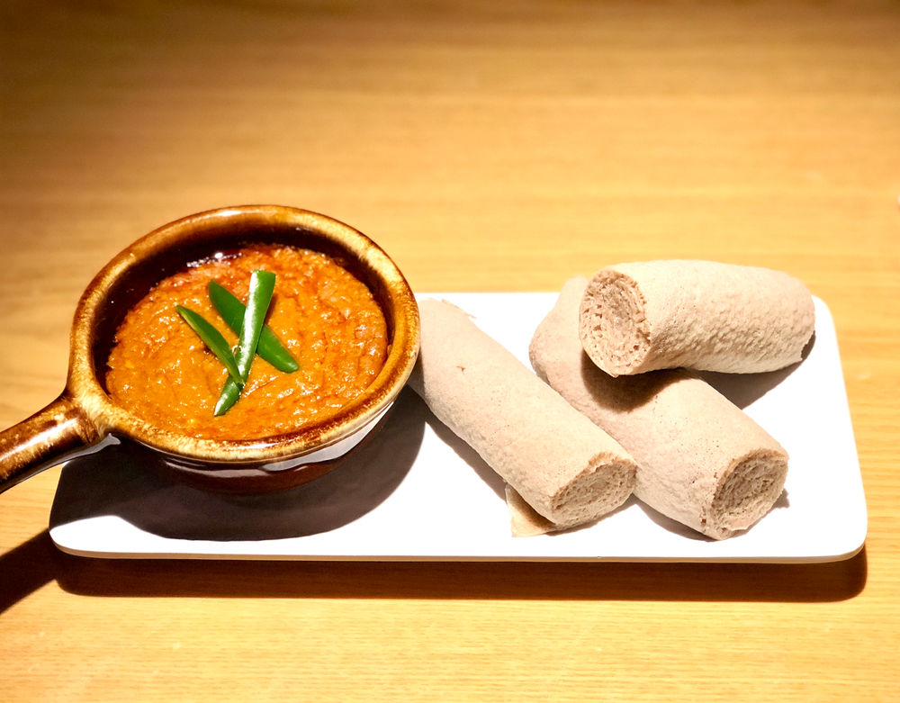

Shiro Stew

1 large red onion, coarsely chopped
10 garlic cloves, peeled
½ cup canola oil
2 tablespoons homemade or store-bought berbere spice mix
Fine sea salt
3 medium vine-ripened tomatoes (about 11 ounces), coarsely chopped
½ cup chickpea flour
1 to 2 jalapeños, stemmed and thinly sliced
Injera or baguette, for serving
INSTRUCTIONS
Mix the spices together in a small bowl and set aside.
Puree the onions in a food processor.
Saute the pureed onions in a dry pot until they start to brown, about 4-5 minutes.
Add the oil and spices. Saute for another 1-2 minutes until the spices are fragrant.
Add tomato paste and garlic, and saute for 2-3 minutes more.
Whisk in the chickpea flour, fully coating in the oil. Then gradually start to add the water, whisking constantly like you were making a thickened sauce. Continue whisking until mixture is smooth.
Simmer for another 5 minutes.
Finish with the butter and salt to taste.
Serve with fresh injera.